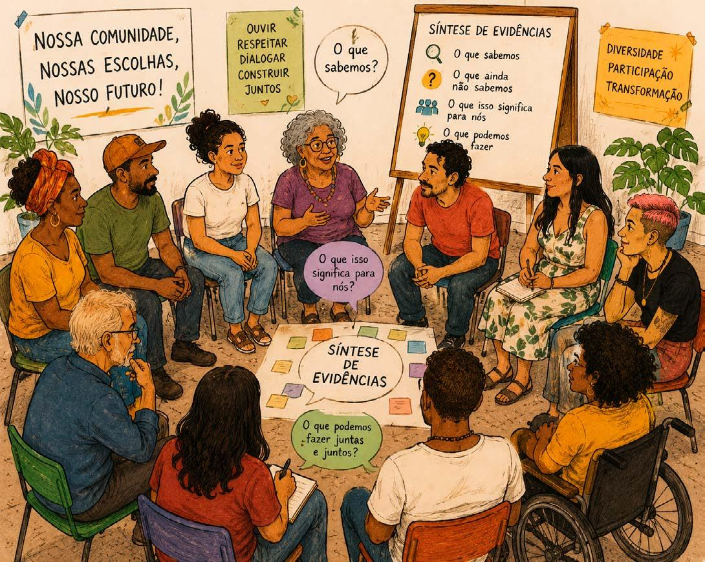

Módulo 3 | Aula 2
Processos participativos para produção de evidências locais
Da participação à ação: legitimidade, equidade e implementação de políticas públicas
Como vimos, a participação é o primeiro passo para incluir mais vozes no processo de políticas informadas por evidências. No entanto, para garantir um minipúblico equitativo, há algumas recomendações-chave (World Health Organization, 2024):
- Recrutar os participantes por meio de algum tipo de sorteio/randomização com cotas para garantir diversidade demográfica — como idade, gênero, etnia, renda, território, escolaridade e religião — e também diferentes perspectivas e experiências relacionadas ao tema em debate.
- Oferecer apoio para transporte, hospedagem, cuidado infantil, conectividade e compensação pelo tempo dos participantes. Essas medidas ajudam a garantir a inclusão de pessoas com menos recursos, tempo ou experiência em processos participativos.
- Incluir momentos de aprendizagem coletiva, discussão de diferentes perspectivas e construção de conclusões ou recomendações sobre possíveis ações e políticas, buscando o equilíbrio de tempo de fala entre participantes.

Fonte: Elaboração própria com auxílio de inteligência artificial – OpenAI ChatGPT (2026).
Podemos imaginar que, mesmo a partir de uma questão de política pública que parece simples, como qual a melhor forma de entregar para a comunidade orientações sobre prevenção em saúde, um grupo diverso de pessoas pode trazer opiniões muito diferentes: para as pessoas que possuem um aparelho celular com pouco espaço de memória, talvez baixar um novo aplicativo seja inviável, ao mesmo tempo que, para pessoas que trabalham em locais distantes da unidade de saúde, receber as informações presencialmente seja uma barreira.
Assim, não basta conhecermos as melhores evidências disponíveis, é essencial compreender as preferências e os valores dos cidadãos, dos profissionais de saúde e da gestão para que a decisão seja coletiva, legítima e implementável. Às vezes, mesmo uma intervenção com uma grande base de evidências disponíveis sobre seus efeitos positivos, pode ser considerada impossível de implementar caso não tenha aceitação da comunidade ou capacidade de ser multiplicada localmente de forma sustentável.
Veja o debate entre Jorge Barreto e Daniel Amado sobre as evidências disponíveis para as práticas integrativas e complementares e os desafios de implementação:
Os processos participativos, como vimos, são alguns dos pilares de legitimidade das políticas informadas por evidências. Nesta aula reforçamos o quanto adotar abordagens de cocriação de conhecimento, incluindo vozes diversas, pode ser um diferencial na hora de combinar evidências globais de estudos científicos com informações locais. Esse é um processo crítico para garantir a confiança de quem está tomando uma decisão em política pública — e também da comunidade que se beneficiará dessa decisão. Na próxima aula você conhecerá ainda mais sobre um tipo de processo participativo: os diálogos deliberativos.